Dans ce module, nous décrirons comment les différents types de déchets sont injectés dans les installations de combustion des déchets dangereux.
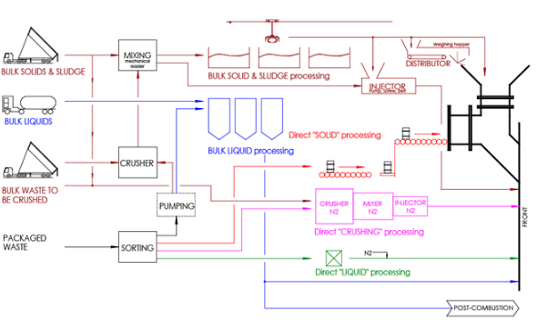
Fig. 1
Le schéma ci-dessus résume les différents type de déchets et leur mode d’injection dans le four ou la post combustion.
Les solides et les boues préparés (broyés, mélangés) sont stockés dans les fosses et sont injectés dans le four par :
Les liquides sont stockés en fonction de leurs caractéristiques dans des stockages dédiés (HPC, MPC, BPC, Chlorés…). Chaque stockages est raccordé au four par une ligne et la façade du four comprend plusieurs cannes d’injection (4 à 6) par lesquelles sont pulvérisés les déchets liquides. Certains liquides (eaux polluées) peuvent être injectés de la même façon en Post Combustion (PC).
Les conditionnés peuvent être prétraitrés (Module 4’) pour rejoindre une des filière d’injection vrac (liquide ou solide). Certains conditionnés très réactifs ne peuvent être prétraités, ni mélangés. Ils sont alors injectés dans le four par deux techniques dites d’« injection directe » :
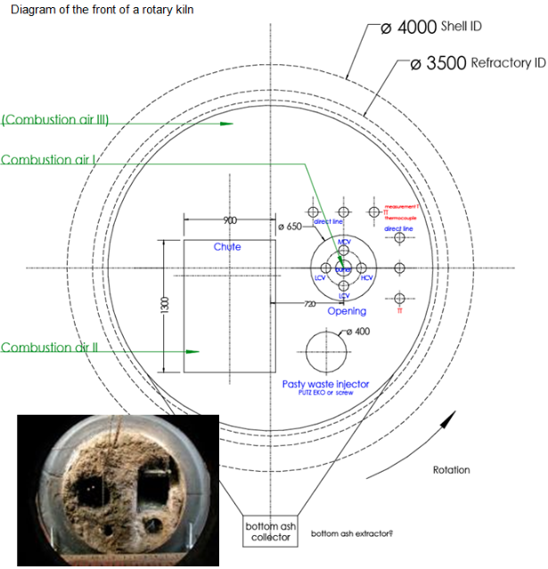
Fig. 2
Le brûleur permet le mélange dans les bonnes proportions du combustible (le fioul ou le gaz) et du comburant (l’air). Il assure l’inflammation du mélange et le maintien de la combustion. Le brûleur comporte des systèmes de sécurité qui, en cas de problèmes (absence de flamme, par exemple), doivent arrêter l’alimentation en combustible et signaler le défaut.
Le brûleur installé sur le four d’incinération est mis en route pour les raisons suivantes :
Au démarrage, le brûleur réchauffe le four à une température de 850°C avant l’introduction des déchets dangereux.
Le conducteur du four doit respecter des paliers de montée en température. Ces paliers sont indiqués par le fabricant du four, ils sont de l’ordre de 30 à 50°C par heure sur les gaz de combustion. Ils évitent les fortes contraintes thermiques qui risqueraient d’endommager les réfractaires et les différentes parois de la chaudière. Dès que la température du foyer est supérieure à 850°C, le conducteur peut alors commencer à introduire les déchets dans le four. La puissance du brûleur est progressivement diminuée au profit de celle dégagée par la combustion des déchets. Le conducteur du four s’assurera que la température du foyer respecte la règle des 850°C pendant deux secondes et que le débit de vapeur reste stable.
Lors des phases de soutien, le brûleur démarre ou s’arrête automatiquement lorsque la température du foyer est inférieure ou supérieure à 850°C deux secondes. Lors de l’arrêt complet du four, le brûleur est maintenu en marche et assure une température de 850°C jusqu’à ce qu’il n’y ait plus d’ordures en feu présentes dans le four.
Les puissances des brûleurs installés en incinération représentent 75%
On rencontre plusieurs sortes de brûleurs, que l’on peut répertorier selon :
Les brûleurs peuvent être alimentés en :
Compte tenu des températures élevées qui règnent à l’intérieur du four, les fabricants proposent différents systèmes qui permettent de protéger le brûleur :
Cette liste n'est pas exhaustive.
Pour créer une flamme, il faut mélanger l’air au combustible et apporter de la chaleur pour provoquer l’inflammation. L’apport de chaleur est généralement provoqué par un arc électrique. On trouve aussi des torches d’allumage alimentées au propane. Les brûleurs sont composés principalement de quatre circuits principaux :
Description du brûleur escamotable avec écran thermique et système de pulvérisation mécanique
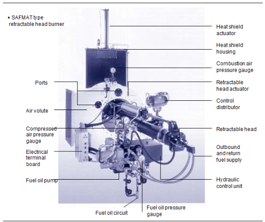
Fig. 3
Les éléments principaux qui constituent le brûleur sont :
Les schémas suivants présentent deux situations de l’état du brûleur :
a/ pendant l'utilisationLorsque le brûleur est en marche, la tête de combustion est avancée dans le four et la guillotine de protection levée.
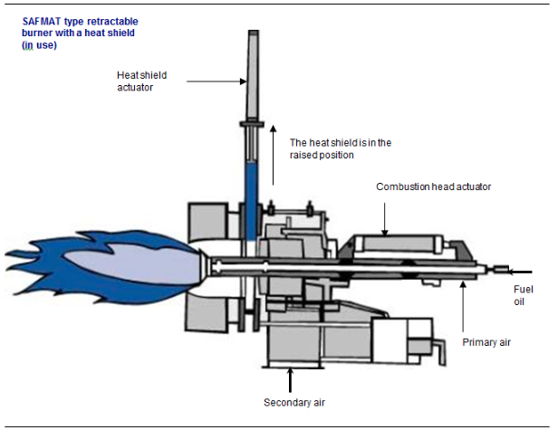
Fig. 4
b/ à l’arrêtLorsque le graveur est arrêté , la tête de combustion recule et le bouclier thermique s'abaisse.
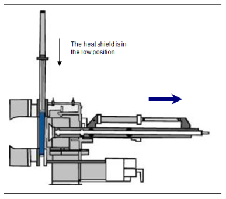
Fig. 5
Le circuit combustible Le brûleur est composé d’un circuit combustible qui comprend :
La pompe alimente le brûleur en fioul avec un débit constant et une pression élevée supérieure à la pression de pulvérisation.
La combustion du fioul est facilitée lorsque celui-ci est pulvérisé en fines gouttelettes et forme un brouillard. La pulvérisation a aussi pour rôle de faciliter le mélange du fioul avec l’air de combustion.
Les filtres placés avant la pompe et le gicleur retiennent les poussières et évitent la destruction de la pompe et l’encrassement du gicleur. Le gicleur est équivalent à un pulvérisateur.
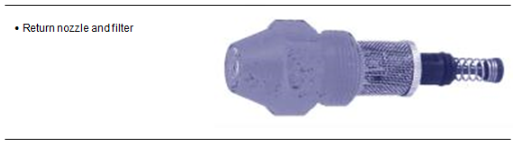
Fig. 6
La buse est un atomiseur.
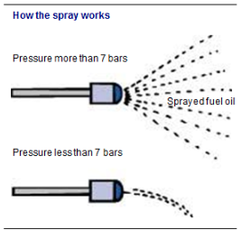
Fig. 7
Pour que la pulvérisation se fasse correctement, la pression du fioul au niveau du gicleur doit être supérieure à 8 bars. Cette pression peut monter jusqu’à 30 bars. Si la pression est inférieure à 7 bars, il ne se forme pas de brouillard à la sortie du gicleur, mais un filet qui ne permet pas la formation de la flamme.
Le circuit d’air de combustionIl commence à l’ouïe d’aspiration et se termine au niveau du mélange air-gaz. Tout ou une partie de l’air peut servir à un prémélange air-gaz en amont de la tête du brûleur. Il est composé :
Pour les grosses puissances, le ventilateur est généralement situé en dehors du brûleur, ceci pour limiter l’encombrement et le niveau de bruit. Il doit injecter le débit d’air nécessaire à la combustion du fioul et doit souffler l’air à une pression suffisante afin de vaincre les pertes de charges du circuit d’air.
Tous les combustibles (solides, liquides et gazeux) ont des caractéristiques physiques et thermiques différentes. Trois combustibles sont utilisés par les brûleurs dans four d’incinération : le fioul domestique et le gaz, utilisés pour le brûleur principal; le propane, utilisé pour les torches d’allumage du brûleur principal.
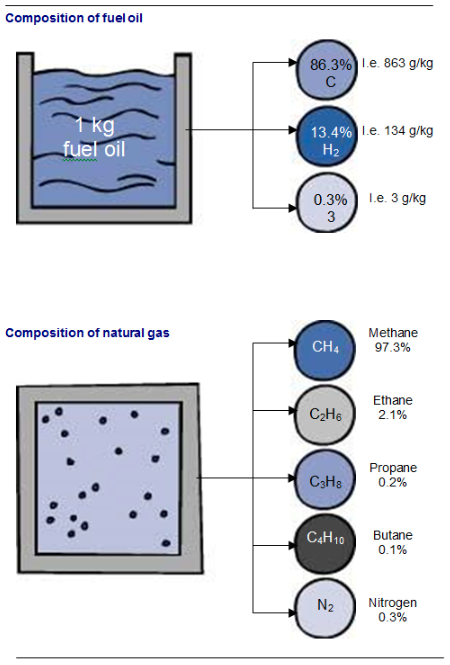
Fig. 8
Le fioul est essentiellement composé de carbone (symbole C) et d’hydrogène (symbole H). À ceci s’ajoute des produits non éliminés au raffinage, tel le soufre.
Le gaz naturel est constitué d’hydrocarbures, des corps composés de carbone et d’hydrogène. On trouve par exemple du méthane, composé d’un carbone lié à quatre hydrogènes (symbole CH4) qui représente 97,3%
Caractéristiques des combustibles Masse volumique et densitéLe fioul a une masse volumique égale à 840 kg/m3 et une densité inférieure à celle de l’eau. Ces caractéristiques sont données pour une température de 15°C. Le gaz naturel a une masse volumique égale à 0,74 kg/m3. Il est plus léger que l’air puisque sa densité est égale à 0,57.
Ces caractéristiques sont importantes car elles permettent de prendre certaines précautions lors de l’utilisation de ces produits.
Pour le fioul, on retrouve au fond de la cuve l’eau et les boues. Pour le gaz naturel, plus léger que l’air, il est nécessaire d’aménager des ventilations hautes dans les bâtiments fermés, ceci pour évacuer les fuites de gaz éventuelles.
Le propane, plus lourd que l’air, a tendance à se répandre au sol en cas de fuite. Il faut une extraction en bas du bâtiment.
ViscositéLa viscosité ne concerne que le fioul. Elle représente la résistance à l’écoulement dans les canalisations et joue un rôle important dans les opérations de pompage et de pulvérisation.
Plus le fluide est visqueux, plus il est difficile de le pulvériser et de le faire circuler dans les canalisations. La viscosité diminue avec l’élévation de température. On trouve parfois sur les lignes de gicleurs des systèmes de réchauffage de fioul qui facilitent l’écoulement et la pulvérisation du fioul. L’unité de la viscosité est le centistockes (cSt). Le fioul domestique à 20°C a une viscosité égale à 8 cSt.
Pouvoir calorifique inférieur des combustiblesLes quantités d’énergie calorifique (ou pouvoir calorifique) dégagées par la combustion complète d’une unité de combustible sont les suivantes :
| Type of fuel | Fuel oil | Natural gas | Propane |
|---|---|---|---|
| NCV (Net Calorific Value) | 11.9 kWh/kg | 10.1 kWh/Nm³ | 25.4 kWh/Nm³ |
Fig. 9
NB : pour les gaz, l’unité de combustible est le normal mètre cube (Nm3) (voir module 5). Puissance théorique du brûleur
À partir de ces valeurs, on peut calculer la puissance théorique dégagée par un brûleur. Par exemple, un brûleur qui débite 1200 kg/h de fioul domestique a une puissance de :
%[ 1200 11,9 = 14 280 kW %]
%[ Puissance brûleur = débit combustible % times NCV %]
Le principe de la combustionIl ne peut y avoir de flamme que si les trois éléments suivants sont en présence :
Pour réaliser la combustion d’un mélange de combustible et d’air, il faut :
Vérifiez périodiquement l’état des canalisations d’amenée du combustible, ainsi que les appareillages. Il est nécessaire de manœuvrer régulièrement les vannes d’isolement pour éviter leur grippage. Une vanne en mauvais état doit être signalée. Lors du démarrage du brûleur, il est conseillé de ne pas rester en face.
En cas d’arrêt volontaire des brûleurs pour des travaux :
Les extincteurs à proximité du brûleur doivent être accessibles et en bon état de marche. Ils doivent faire l’objet de contrôle annuel par un organisme. En cas d’incendie, respectez les procédures propres à chaque site et prévenez les pompiers.
Risques liés au gaz naturel et propaneEn quantité importante, le gaz naturel présente un risque d’asphyxie pour l’individu qui le respire. Étant inodore, le fournisseur lui ajoute un gaz odorant afin de mieux le détecter.
Dans une certaine proportion avec l’air (environ 10% En cas de fuite, il faut respecter au minimum les consignes suivantes :
Il existe des appareils spéciaux pour détecter l’endroit précis de la fuite. Il est interdit de mettre en marche des appareils électriques. Lorsque l’on entreprend des travaux sur une ligne de gaz, il faut respecter les procédures.
Il est interdit de fumer, d’effectuer des travaux de soudage, de meulage ou perçage à proximité des zones où il y a présence de gaz. La vérification de la pression de service permet de contrôler qu’il y a présence de gaz dans les canalisations.
Les injecteurs de liquides, encore appelés lances ou canne d’injection font partie intégrante de l’équipement de chauffe (communément appelé « brûleur »). Un « brûleur » à déchets comprend donc un injecteur central de combustible (fuel ou gaz ; décrit au § précédent) et plusieurs lances d’injection (4 à 6).
Chaque lance peut être raccordée à une ligne déchet, elle même reliée à une cuve. Cette ligne d’amener du déchet peut être simple ou en boucle, c’est à dire avec un retour du déchet vers la cuve.
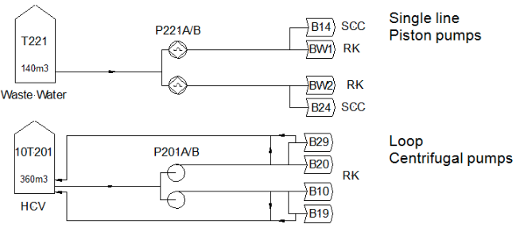
Fig. 10
Les injecteurs sont constitué d’un corps en acier par lequel est amené le déchet liquide et d’une double enveloppe par laquelle est amené l’air de pulvérisation (5-7 bars). La pulvérisation se fait dans un gicleur (ou buse).
Les lignes d’injection des liquides sont équipées de débitmètres massiques qui mesurent instantanément la quantité (en kg/h) de liquides injectés dans le four et la post-combustion.
La pression d’injection du déchet ainsi que la pression de pulvérisation également suivi en continu, pour détecter les bouchages de ligne. Une purge à l’air comprimé ou à la vapeur permet de déboucher et de nettoyer les lignes.
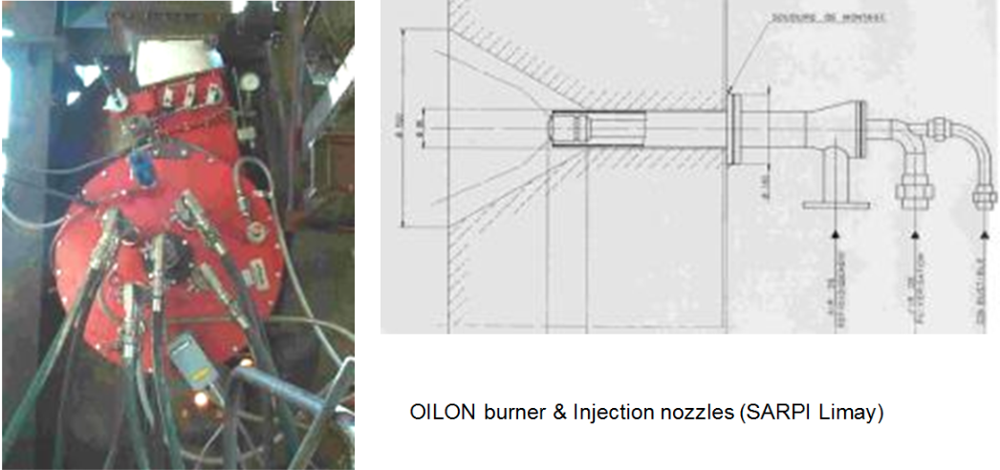
Fig. 11
Il sert à alimenter le four en déchets depuis la fosse jusqu’à la trémie. Il permet également de mélanger les déchets dans la fosse de manière à avoir un déchet plus homogène. Compte tenu de son utilisation intensive, jusqu’à dix mouvements par heure en plus de l’opération d’homogénéisation, c’est un équipement soumis à de nombreuses contraintes et qui peut donc connaître certaines pannes. Il est important d’en prendre le plus grand soin et de l’utiliser avec une grande attention.
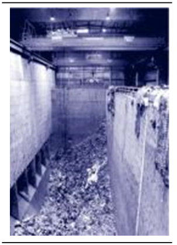
Fig. 12
{La grue au-dessus de la fosse} DescriptionLe pont roulant permet le déplacement du grappin et de la charge selon trois axes :
Les ponts roulants utilisés pour la manutention des déchets ménagers sont des ponts roulants bipoutres posés. Ils se déplacent en translation au-dessus de la fosse par un système de quatre galets motorisés roulant sur des rails.
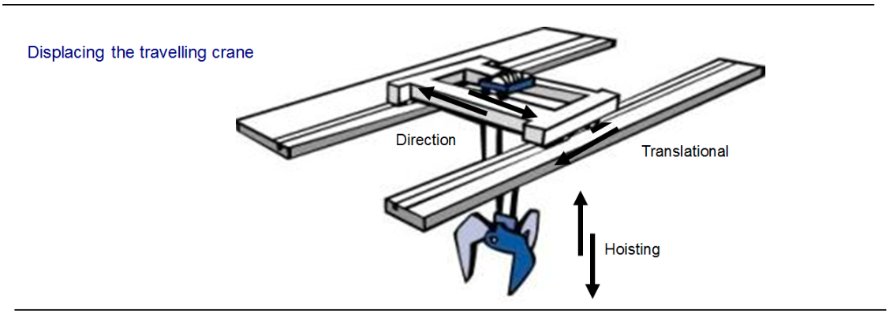
Fig. 13
Un pont roulant est composé des éléments suivants :
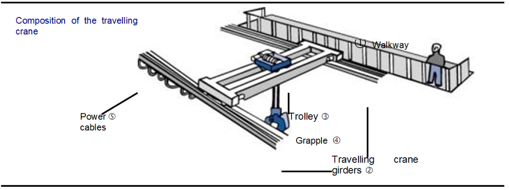
Fig. 14
Le système de levage à grappin est monté sur le chariot. Le système comprend :
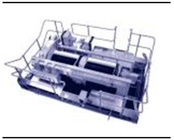
Fig. 15
{Trolley} Caractéristiques{0.3cm}
Le constructeur prescrit les principales caractéristiques de son pont. Celles-ci permettent de définir les limites de fonctionnement du pont roulant. On trouvera inscrit :
Exemple de données :
Caractéristiques techniques de la grue
| Max. load | Hoisting speed | Translational speed | Directional speed |
|---|---|---|---|
| 7500 daN | 40 m/min. | 40 m/min. | 30 m/min. |
Fig. 16
Le fabricant indiquera la capacité ou le volume du grappin en m3
Pour éviter la rupture des câbles et du pont, il est impératif de ne pas dépasser la charge maximale admissible indiquée par le constructeur.
Il est conseillé d’utiliser le grappin en position verticale pour éviter les sorties de câble des poulies.
Il faut éviter de heurter les murs de la fosse et de provoquer des à coups.
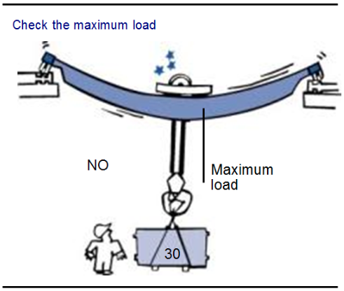
Fig. 17
IlLe pont roulant est équipé d’un ensemble de capteurs qui limitent les dysfonctionnements et les accidents, notamment :
Plusieurs types de grappins existent :
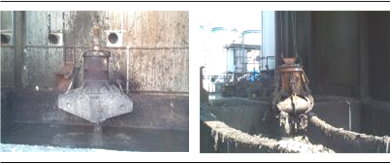
Fig. 18
Dysfonctionnements possibles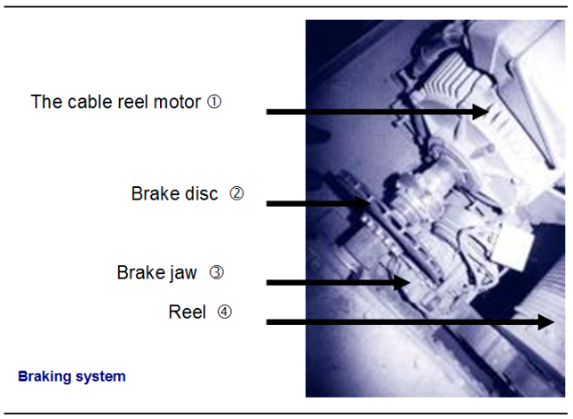
Fig. 19
La grueCertains dysfonctionnements peuvent être rencontrés au niveau des pièces en mouvement car elles sont soumises à :
Le pont roulant travaille dans un hall qui est rapidement recouvert d’une poussière très abrasive et qui provoque ainsi une usure rapide de ces pièces. Il convient de nettoyer complètement le pont une fois par semaine. D’autres pannes peuvent survenir pour des raisons mécaniques.
Les câbles de levage seront changés dès que l’on verra l’un des brins détérioré. Le pont peut s’arrêter si les câbles de levage se chevauchent au niveau du tambour d’enroulement. Il faut alors faire redescendre le grappin pour supprimer le chevauchement. Ceci est lié à la mauvaise conduite du grappin. Il faut éviter de déplacer le pont avant de lever le grappin, de même qu’il faut éviter de donner trop de mou au câble (risque de décrochement du grappin).
Le chariot peut aussi s’arrêter intempestivement alors qu’il se trouve au milieu de la fosse : ceci est dû à un mauvais fonctionnement des contacts fin de course. Il faut alors vérifier sur le pont la position des « étoiles », ou le contact de fin de course.
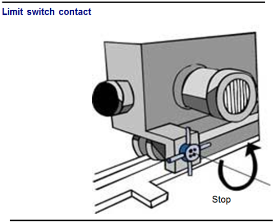
Fig. 20
En dehors des vérifications quotidiennes, le pontier contrôle de manière visuelle l’état général du pont une fois par semaine :
Il peut arriver également que l’ouverture ou la fermeture du grappin ne fonctionne pas correctement à cause de déchets coincés entre les dents (ou les vérins de commande dans le cas du système électro-hydraulique). À chaque prise de quart, il faut donc vérifier les endroits « sensibles » du grappin et procéder si nécessaire au nettoyage de celui-ci.
On procédera au graissage des axes de dents au moins une fois par 24 heures, en général de nuit lorsque l’activité est moins importante.
On vérifiera visuellement qu’il n’y a pas de fuite d’huile au niveau des vérins, dans le cas de grappin électro-hydraulique. Dans ce dernier cas, on contrôlera également :
PRISE DE POSTE
Prendre connaissance des indications du pontier précédent Vérifier que personne n’intervient sur le pont roulant S’assurer que les accès aux quais sont verrouillés Vérifier le bon état des câbles Faire à vide des manœuvres de levage, de direction et de translation Vérifier le bon fonctionnement des équipements (freins, contacts de fin de course…)
CONDUITE
Ne permettre la conduite qu’à des personnes qualifiées Ne pas balancer le grappin pour saisir ou déposer une charge Ne pas effectuer de traction oblique Éviter de laisser la charge suspendue longtemps en attente dans le grappin Interdire l’accès dans les zones où les chutes peuvent se produire Interdire l’accès dans la zone de travail du pont Monter le grappin au maximum avant d’entamer un mouvement de translation
FIN DE POSTE
Laisser le grappin hors d’atteinte et verrouiller le pont
ENTRETIEN COURANT
Amener le pont roulant au point prévu pour l’entretien Consigner le pont, ouvrir l’interrupteur général, le verrouiller et interdire sa fermeture, le signaler avec une clé Utiliser un équipement individuel contre les chutes (harnais, filet…)
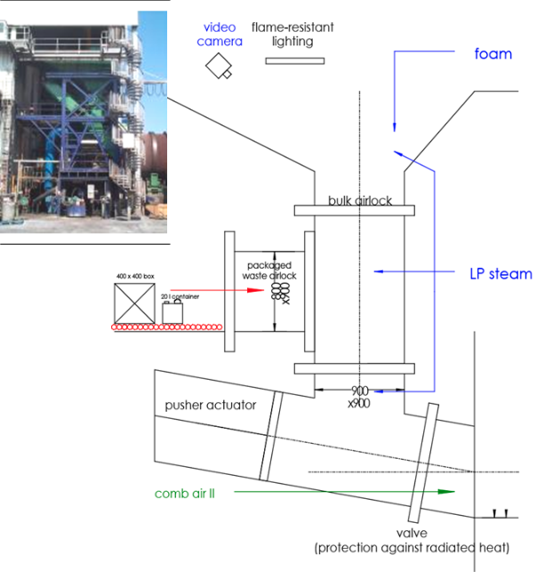
Fig. 21
La goulotte solides assure l’enfournement de deux types de déchets : les déchets solides vrac depuis les fosses de stockage par l’intermédiaire du grappin les déchets conditionnés réactifs (filière directe)
Le mouvement du grappin peut être entièrement automatisé. Le conducteur de four choisit alors par l’intermédiaire d’un programme informatique : la zone de prise dans les fosses, l’ouverture du grappin, la fréquence des mouvements… Le grappin peut-être contrôlé en semi-automatique : le conducteur reprend la maîtrise du système au moment de l’injection dans la goulotte. C’est lui qui décide quand, et combien de déchet seront enfournés, en fonction de ses paramètres de conduite (températures, taux d’oxygène…).
L’alimentation peut également être réalisée par un tapis à partir d’un tampon. Le grappin alimente une trémie tampon qui se vide sur un tapis à écaille. Le tapis alimente une trémie sur pesons qui bascule une charge dans le four. Le conducteur de four contrôle la charge maximale par mouvement et la fréquence d’injection d’une charge.
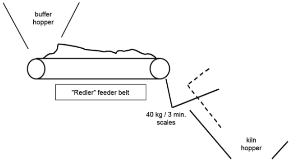
Fig. 22
Une fois les déchets déposés dans la goulotte, un automate gère l’ouverture et la fermeture des registres ainsi que le mouvement du vérin poussoir d’injection.
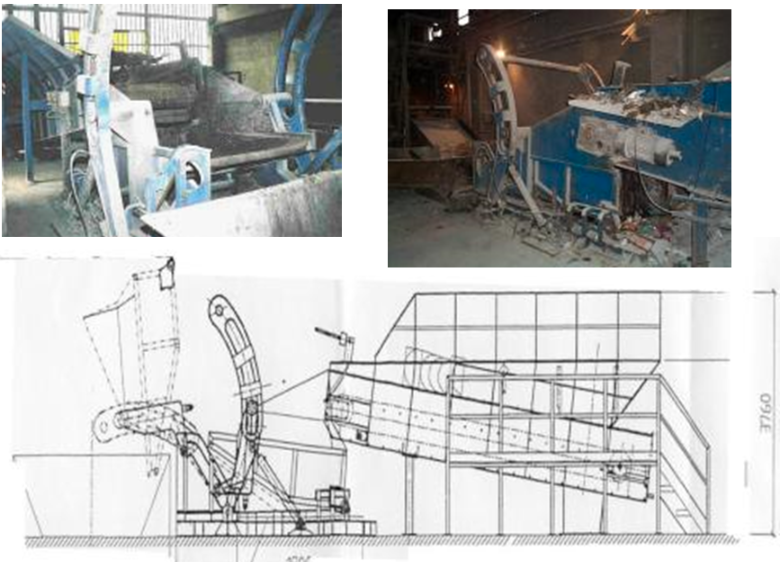
Fig. 23
Les pompes à boues peuvent être utilisées pour injecter une charge homogène de déchets pâteux à l'avant de l'incinérateur. Le degré de pâte peut varier. Les pompes à boues sont essentiellement des pompes à béton adaptées à cet usage spécifique. Deux types de pompes à boues sont utilisées pour injecter les déchets dangereux :
Les déchets alimentant ce type d'équipements sont stockés dans des fosses dédiées. Ces déchets sont soigneusement préparés par mélange avec le grappin ou un chargeur mécanique. L'opérateur préparant les déchets doit notamment veiller à ce qu'aucune pièce métallique, trop grosse pour les pompes, ne pénètre dans le mélange.
Ce matériel d'injection offre l'avantage d'injecter les déchets à la fois en douceur et régulièrement. Cela contribue à créer des conditions de combustion satisfaisantes.
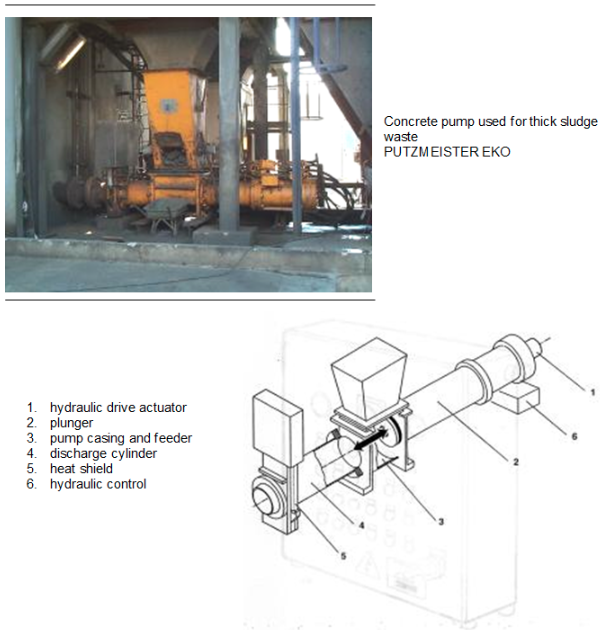
Fig. 24
Certains déchets liquides sont particulièrement réactifs et ne peuvent être mélanger sans danger avec d’autres liquides. Certains déchets très toxiques ne doivent en aucun cas être manipuler à l’air libre. Pour ces différents types de déchets, il existe des lignes directes, c’est à dire des tuyauteries, des pompes et des lances d’injection dédiées.
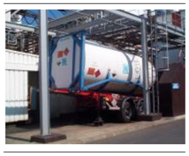
Fig. 25
Généralement, les déchets concernés sont livrés en isocontainer : c’est une citerne particulière de 10 à 15 m3, équipée d’une double enveloppe et inertée à l’azote. Dans le cas de déchet nécessitant un préchauffage avant injection, la vapeur est branchée sur l’isocontainer et il est raccordé à une ligne tracée, c’est à dire chauffé extérieurement. L’injection se fait généralement en appliquant une pression d’azote dans l’isocontainer : le déchet est alors poussé vers la lance de pulvérisation.
Les petits conditionnés réactifs, qui ne peuvent être vidés ou broyés, sont injecté directement dans le four. Il peut également s’agir de destruction sous contrôle d’huissier, de produits de Recherche et Développement (confidentialité), de drogues…
Les petits conditionnés sont tout d’abord placés dans des cartons, en fonction de leur composition chimique, stabilisés avec de la vermiculite (sable) et envoyés vers la plate-forme de « Filière Directe ».
Ils intègrent alors une chaîne de transporteurs (table à rouleaux ou tapis) qui les amène jusqu’à un sas dans la goulotte à solide. Ils sont pesés juste avant l’injection à travers ce sas, dans l’intervalle entre les deux registres de la goulotte.
Un programme informatique gère les cadence d’enfournement. Le conducteur de four sera très attentif lors de l’injection de ces déchets qui peuvent apporter des perturbation notable dans la combustion.
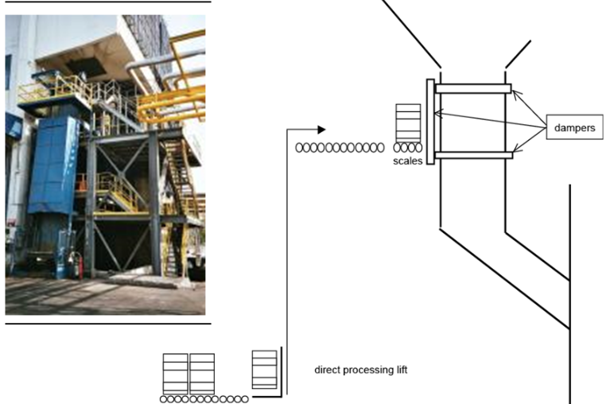
Fig. 26